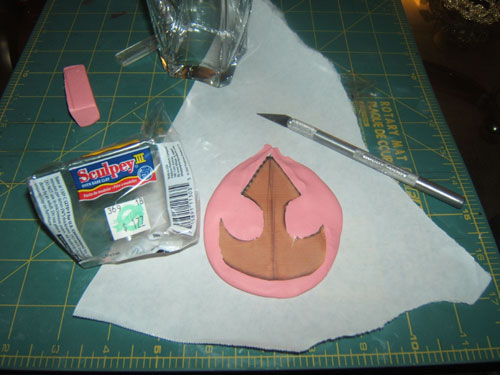
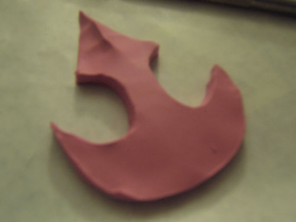
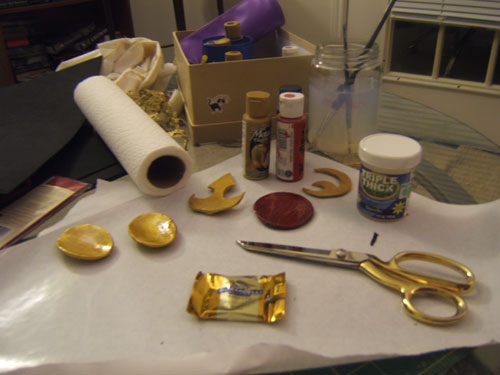

There were a lot of details in
Azula's costume that I had to make out of sculpey. Sculpey is really easy to use and great for lots
of different small costume pieces. Besides the crown, I used sculpey to make the medallions on Azula's belt and boots,
the Pokedex for my
Leaf Green costume, and the medallion on the front of my
Sailor Jupiter costume.
Materials
- Sculpey
- Reference Picture
- Exacto-Blade/Knife
- Cutting Mat/Cutting Board
- Parchment Paper/Wax Paper
- Oven
- Paint
- Paint Brush
- Modge-Podge/Glaze
- Hot Glue or SuperGlue
Mold Crown
The very fist thing I did was print out a to-scale reference picture to use as my guide. Once I had the picture,
I warmed up my sculpey and rolled it out onto wax paper. (This is important because Sculpey is sticky!
The first time I tried this I had a perfectly shaped crown, but I couldn't get it off
of my cutting board to put it into the oven.)
Next, I laid the print out of the crown onto the rolled out sculpey and used the exacto knife to trace the picture. It took a few tries to get the
thickness right all the way around.

Then I used my fingers to get the shape right--rounding the edges and making the crease down the front of the crown
in the form of a little peak.

Bake
Following the instructions on the sculpey package, I set my nicely shaped crown onto a new piece of wax paper and popped it into the
toaster oven for fifteen minutes.
Paint
I used ____ paint, several coats on each side, letting it dry completely between coats. Then I used ____ glaze, one coat on
each side. The glaze was tricky because it starts to dry as soon as you paint it onto the crown and threatened to
clump up and make unwanted bumps of glaze on the surface. It also took quite a long time to dry, so be sure to do this
well in advance of the actual event!

Attach Elastic
I cut two three inch strips of black elastic and glued them to the back of the crown using hot glue. It held up
pretty well, but the glue didn't stick to the glaze the way I hoped and I had to glue it back on with super glue at the
con. I think my glue gun is just wimpy. The hotter the hot glue gun, the stickier the glue and the more solid the bond.
After doing my Fire Nation bun, I just tied the two pieces of elastic around the bottom of the bun tightly. Tada!!
Back to Props and Boffers
Back to Zuko and Azula Costumes Page